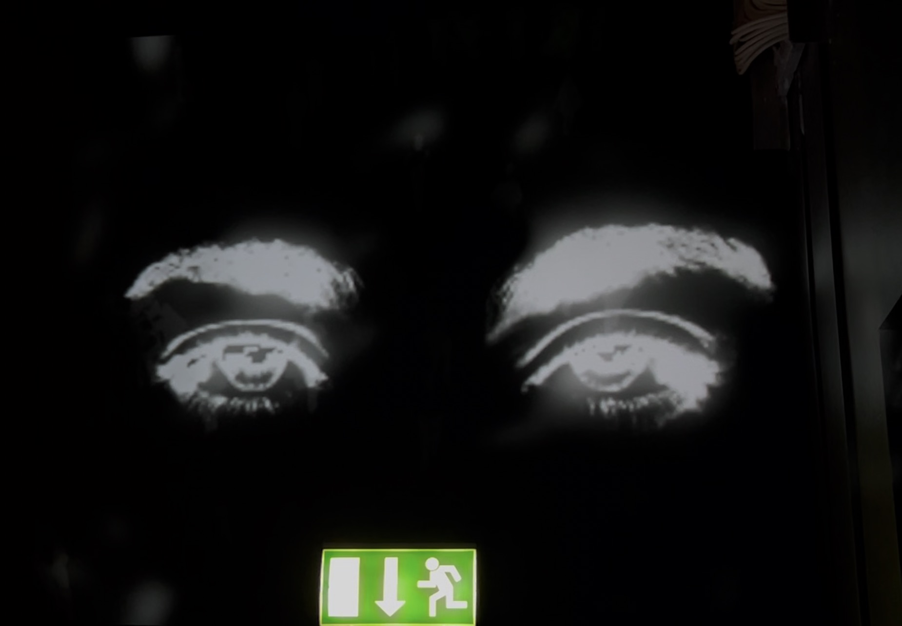

I SAW
YOU ENTER
Dmytro Parinov, Otto Ekerman
IT, Media and Design, Södertörn University.
About me
My name is Dmytro Parinov, as a kid, I loved building with LEGO. Now that I'm older, I build websites and interactive things, and I'm still building, just with code instead of bricks. I still love LEGO.
Final project: I Saw You Enter
I Saw You Enter is an interactive installation about the feeling of walking into a club and sensing that all eyes are on you. Step into a hallway of microphones and speakers, experience the sounds from MAX MSP by Otto Ekerman and enjoy the visuals from TouchDesigner by Dmytro Parinov. In a world of cameras, social media and information that spreads in seconds, many of us fear our digital footprint. We hold back: we don't dance, we don't laugh, we don't express ourselves. We want you to feel that tension in your body, because you can't hide forever. We saw you enter.




Team
Made together with Otto Ekerman for the Algorave.